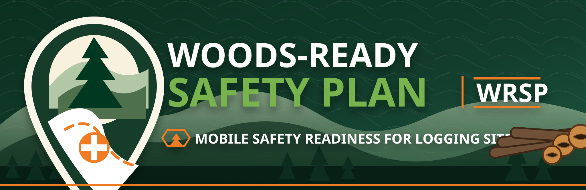

Field utility
Start every logging job with emergency-ready information.
Build, save, share, import, and reopen job safety plans on this phone, even after service drops.
Plans save on this phone and work offline after WRSP has loaded.
More tools
Job plan
Create or edit safety plan
On this phone
Saved plans
Saved plans are stored only on this device unless you choose to share or export them. Clearing browser data or replacing the phone may remove saved plans.
Safety plan
Plan view
Import QR code
Scan this code to open/import the plan. Best used from the hosted WRSP app, not the local file preview.
Help me right now
Current location and emergency utility
WRSP does not contact 911. For serious injury or uncertain severity, call 911 and request EMS.
GPS not captured yet.
Online lookup
Find medical care
Use urgent care only for non-life-threatening issues. For serious injury, heavy bleeding, crushing injury, head/neck/back injury, chest pain, trouble breathing, loss of consciousness, or uncertain severity, call 911 and request EMS.
Save facility information to current plan
After finding a facility, paste or type the name, address, phone, and directions link here so it becomes part of the saved safety plan.
Before an emergency
Preparedness profile
Defaults
Default plan information
Shared plan
Import plan
Import from file
Choose a WRSP plan export file that someone shared with you, then save it as a new local plan.
Paste backup code
Install and help
Save WRSP to your home screen
iPhone / Safari
- Open WRSP in Safari.
- Tap the Share button.
- Scroll to Add to Home Screen.
- Tap Add.
Android / Chrome
- Open WRSP in Chrome.
- Tap the three-dot menu.
- Tap Add to Home screen or Install app.
- Confirm.
Saving WRSP to the home screen makes it easier to find and helps it remain available for field use after loading.
Offline readiness
PWA status and test checklist
Full install/offline behavior requires WRSP to be opened from an HTTP/HTTPS address, such as GitHub Pages. The local file preview is useful for layout and workflow review, but it cannot fully test service worker caching.
Field test checklist
- Open WRSP from the hosted site and confirm this page shows service worker support.
- Create or open a sample plan and save it locally.
- Use Add to Home Screen or Install app on the phone.
- Close the browser, turn on airplane mode, then reopen WRSP from the home screen.
- Confirm saved plans open, edits save, and responder view/print/share text remain available.
- Turn service back on and confirm maps, medical lookup, QR image generation, and feedback email work again.
About
Resources and acknowledgements
About WRSP
The Woods-Ready Safety Plan helps loggers, foresters, crew leads, trucking coordinators, and landowner representatives prepare the emergency information needed before work begins on a logging site.
WRSP is a practical field utility: create a site safety plan, save it on this phone, reopen it offline, and share responder-ready directions, contacts, medical information, hazards, and access notes when needed.
Creator
WRSP was created by Dr. Steven Bick, CF ACF, through Northeast Forests LLC.
Related work includes Northeast Forests consulting, Logging Chance resources, Forest Business School programs, and practical forestry and logging apps.
Grant acknowledgement
This version-one build is based on the Woods-Ready Safety Plan project supported through the THATS Foundation grant program and administered through the Northeastern Loggers' Association.
The funded minimum scope called for a free, no-login, mobile web app for logging-site emergency preparedness with GPS, access notes, contacts, emergency services, meeting point, hazard notes, local storage, offline use, and sharing by text or email.
Logger rescue inspiration
WRSP was inspired in part by the practical rescue-readiness work of Dana Hinckley and Logger Rescue Training in Berlin, New Hampshire.
The app is not a substitute for training, calling 911, EMS, or local emergency procedures. It is meant to make critical site information easier to assemble and share before something goes wrong.
Related resources
- loggingsafety.com - logging safety information and WRSP-related safety resources.
- Northeastern Loggers' Association - project administration and industry outreach.
- Logging Chance - forestry books, apps, tools, and publications by Steve Bick.
- Forest Business School - training and professional development for forestry and logging businesses.
- Northeast Forests LLC - forestry consulting and applied forest business services.
Other apps and tools
WRSP belongs with a larger set of practical forestry, logging, sawmill, and forest-business tools created by Steve Bick.
- Logging Chance apps and tools - the main directory for Steve Bick's free forestry apps, books, publications, and training resources.
- iSawVT - sawmill production and financial analysis for small sawmill operations.
- BARK - biomass, accounting, and resource knowledge tools.
- LC Benchmark - logging cost and productivity benchmarking.
- BOLT Business Plan - forestry-specific business planning for logging operations.
- LiVT, Timber Tools, PATH 3.0, Surewood, and Cut Mark - additional logging, timber measurement, conversion, productivity, and sawmill tools listed through Logging Chance and the Lumbermen OS app collection.
Custom app development
WRSP is also an example of how practical, field-specific apps can be built for forestry, logging, training, safety, and small-business workflows.
Organizations interested in custom apps or applied forestry business tools can contact Dr. Steven Bick through Northeast Forests LLC or Logging Chance.
Feedback
Send feedback to WRSP
More